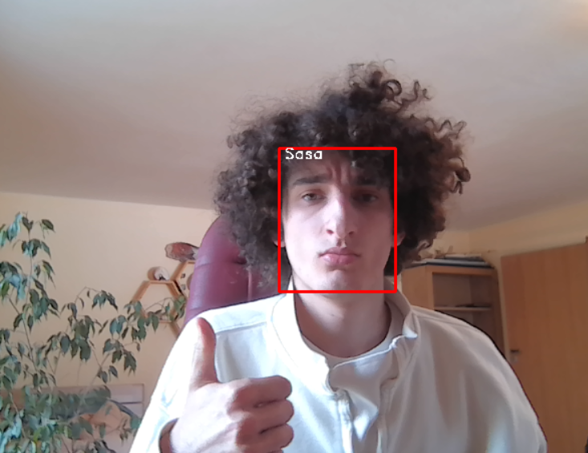

Níže je Python kód pro detekci a rozpoznávání obličejů:
import os
import cv2
import torch
from facenet_pytorch import InceptionResnetV1, MTCNN
from tqdm import tqdm
from types import MethodType
###Pomocna funkce pro enkodovani obrazku obliceje
def encode(img):
res = resnet(torch.Tensor(img)) # Enkodovani vstupniho obrazku obliceje pomoci InceptionResnetV1
return res
### Metoda detekce obliceju a ohranicujici boxy
def detect_box(self, img, save_path=None):
#Detekovani obliceju pomoci MTCNN
batch_boxes, batch_probs, batch_points = self.detect(img, landmarks=True)
# Vybrani obliceju podle nekterych kriterii
if not self.keep_all:
batch_boxes, batch_probs, batch_points = self.select_boxes(
batch_boxes, batch_probs, batch_points, img, method=self.selection_method
)
# Extrahovani obliceju z obrazku (.jpg)
faces = self.extract(img, batch_boxes, save_path)
return batch_boxes, faces
### Nacteni pred-nauceneho modelu
resnet = InceptionResnetV1(pretrained='vggface2').eval()
mtcnn = MTCNN(
image_size=224, keep_all=True, thresholds=[0.7, 0.5, 0.5], min_face_size=60 ##Hodnoty ktere urcuji jak jemne bude hledani obliceje (cim mensi cislo tim sensitivnejsi)
)#Nacteni MTCNN modelu se specifikovanymi parametry
mtcnn.detect_box = MethodType(detect_box, mtcnn) # Overriduje detect_box metodu MTCNN s custom metodou
###Slozka obsahujici ulozene obrazky lidi
saved_pictures = "./saved/"
all_people_faces = {} #Dictionary, ktery uklada zakodovane iterace vsech obliceju
###For ktery prochazi ulozene obliceje a uklada je do dictionary
for file in os.listdir(saved_pictures):
person_face, extension = file.split(".") #Dostane jmeno souboru (nazev cloveka)
img = cv2.imread(f'{saved_pictures}/{person_face}.jpg')
cropped = mtcnn(img) #Detekuje a zmensi obliceje pomoci MTCNN
if cropped is not None:
all_people_faces[person_face] = encode(cropped)[0, :] #Zakoduje zmenseny oblicej a ulozi jej do dictionary
###Funkce ktera detekuje obliceje v live videu
def detect(cam=0, thres=0.8): #thres je taky cislo ktere urcuje toleranci mezi ulozenym obrazkem a framem z videa, cim vetsi cislo tim mensi tolerance a obracene
vdo = cv2.VideoCapture(cam) #Inicializace video zaberu
while vdo.grab():
_, img0 = vdo.retrieve() #Precteni framu z live videa
batch_boxes, cropped_images = mtcnn.detect_box(img0) #Detekovani obliceje a zmenseni ze zaberu
if cropped_images is not None:
for box, cropped in zip(batch_boxes, cropped_images):
x, y, x2, y2 = [int(x) for x in box] # Koordinace boxu, ktery se objevi kdyz je detekovan oblicej
img_embedding = encode(cropped.unsqueeze(0)) # Zakodovani zmenseneho obliceje
detect_dict = {}
for k, v in all_people_faces.items():
detect_dict[k] = (v - img_embedding).norm().item() # Zpocitani podobnosti se vsemi ostatnimi obliceji
min_key = min(detect_dict, key=detect_dict.get) # Najde obliceje s nejmensi vzdalenosti (nejpodobnejsiho)
if detect_dict[min_key] >= thres: # Pokud je podobnost mensi nez nejake cislo tak ho oznaci jako 'Undetected'
min_key = 'Undetected'
cv2.rectangle(img0, (x, y), (x2, y2), (0, 0, 255), 2) # Nakresleni boxu okolo obliceje
cv2.putText(
img0, min_key, (x + 5, y + 10),
cv2.FONT_HERSHEY_DUPLEX, 0.5, (255, 255, 255), 1) # Vypsani textu detekovaneho cloveka
### Zobrazeni anotovaneho ramecku
cv2.imshow("output", img0)
if cv2.waitKey(1) == ord('q'):
cv2.destroyAllWindows()
break
### Hlavni funkce pro spusteni detekce obliceje a kodovani obliceju na videozaznamu
if __name__ == "__main__":
detect(0) # Spustit detekci a kodovani obliceju na vychozim kamera kanalu
Používám MTCNN (Multi-Task Cascaded Convolutional Neural Network) pro detekci a ořezávání obličejů a InceptionResnetV1 pro kódování obličejů. Kód načítá předtrénované modely, kóduje obličeje a pak detekuje obličeje ve videu, klasifikuje je na základě předregistrovaných obličejů.
Program se dá jednoduše spustit v konzoli zadáním příkazu: python main.py ...musíte ale být ve stejné složce jako program. Program se vypne pomocí
Aby program z čeho měl analyzovat váš, nebo jiný obličej, tak fotky nahrávejte do složky
Tento Python program poskytuje rámec pro detekci a rozpoznávání obličejů v reálném čase pomocí předtrénovaných modelů machine learning.
